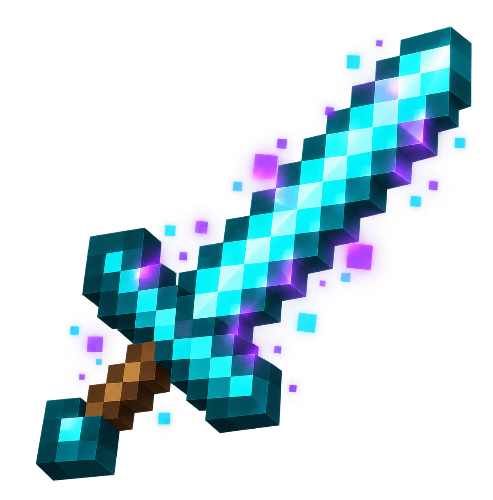
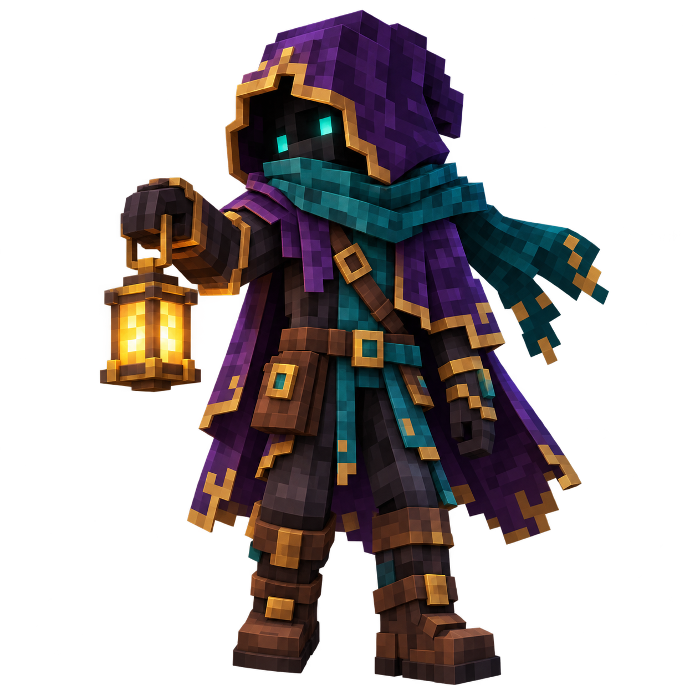
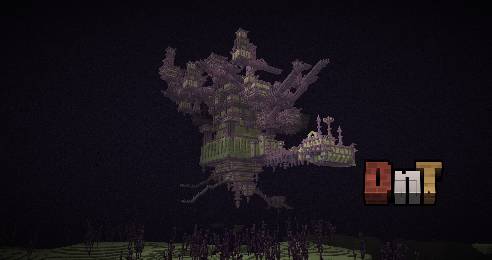
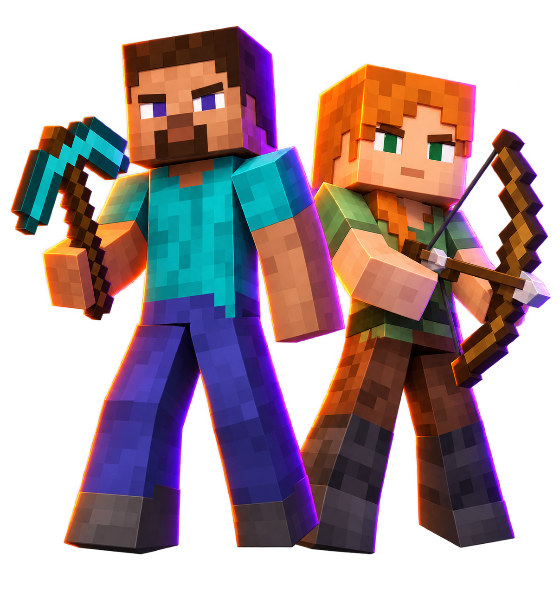

EL OVERWORLD.
El horizonte es solo el comienzo.
Descubre biomas renovados, cumbres imponentes y cuevas que invitan a seguir explorando. Entre los paisajes, nuevas estructuras esperan su primera visita.
TU HISTORIA EMPIEZA AQUÍ.
Más allá del siguiente bloque te espera lo desconocido. Adéntrate en Gluplandia Dungeons y convierte cada expedición en una nueva historia.
play.gluplandia.com Java 26.2 · Bedrock
01 / MÁS ALLÁ DEL HORIZONTE.
El camino importa tanto como el destino. Atrévete a salir de lo conocido.
Descubre biomas renovados, cumbres imponentes y cuevas que invitan a seguir explorando. Entre los paisajes, nuevas estructuras esperan su primera visita.

Explora nuevos biomas infernales y estructuras desafiantes. Prepara tu equipo antes de cruzar el portal.

Terrenos de otro mundo y nuevas rutas de exploración te esperan entre islas suspendidas sobre la oscuridad.
02 / CADA EXPEDICIÓN CUENTA.
Prepara provisiones. Enciende una antorcha. Siempre hay un camino que todavía no has recorrido.
Desciende a criptas y recorre ruinas habitadas por enemigos. Busca las salas ocultas y vuelve con el botín que logres conquistar.
EXPLORA Y SOBREVIVE.Las ciudadelas y torres convierten el paisaje en una invitación. Encuentra una entrada y descubre qué se esconde tras sus muros.
CONQUISTA NUEVOS CAMINOS.Encuentra aldeas y tabernas durante tus viajes. Algunos cartógrafos pueden ayudarte a localizar el siguiente destino.
SIGUE LAS PISTAS.Busca encantamientos especiales entre los tesoros de las estructuras. También encontrarás nuevas herramientas y opciones de armadura para preparar tu próximo combate.
ENCUENTRA TU RECOMPENSA.LA AVENTURA TAMBIÉN ESTÁ EN LOS DETALLES.
La pesca incorpora nuevas recompensas y peces especiales. Explora una progresión ligada al océano y encuentra equipo pensado para tus expediciones acuáticas.
Los conjuntos de adornos completos otorgan habilidades propias. Descubre cómo cambia tu forma de jugar al equiparlos.
Una dimensión cubierta de sculk amplía la exploración subterránea. Sus cavernas guardan nuevas estructuras y objetos por descubrir.
Los mobs incorporan comportamientos y habilidades adicionales. Una estrategia que funcionó ayer puede necesitar cambios en tu próxima expedición.

LOS CONOCES. AHORA TIENEN MÁS PERSONALIDAD.
Los mobs cuentan con movimientos animados más expresivos. Sus gestos y posturas dan otra vida a cada encuentro.
Animaciones disponibles en Java y Bedrock con la configuración visual correspondiente a cada edición.
Solo venía a saludar. Creo.
Tócalo y descubre su reacción.¿La expedición incluye zanahorias?
Tócalo y descubre su reacción.Hmm. Eso merece unas esmeraldas.
Tócalo y descubre su reacción.Ilustraciones interactivas de la galería.

Vista ilustrativa del aspecto del arma.NO TODO ESTÁ ESCRITO EN LOS LIBROS.
Se han añadido encantamientos más allá de los que conoces en Minecraft vanilla. Sus secretos te esperan dentro de Gluplandia.
Hay hallazgos que merecen descubrirse jugando. Esta vez, tendrás que abrir el libro tú.
Podrás cambiar la skin o apariencia visual de tus armas. Prueba aquí distintas ambientaciones del mismo objeto.
Amatista. Un brillo violeta sobre el filo.
Los modelos disponibles se descubrirán dentro del servidor.ELIGE EL CAMINO QUE TE LLAMA.
Cambia de destino para descubrir qué te espera y cómo preparar tu viaje.
Busca aldeas entre biomas renovados y descubre las ruinas que interrumpen el paisaje.
Lleva comida y una cama. Guarda las coordenadas de tu base para encontrar el camino de regreso.
PRÓXIMAMENTE · UN UMBRAL SIN MAPA.
Un portal a otra dimensión. Nadie te ha contado qué hay detrás y la luz que sale de él no se parece a la del amanecer.
Las piedras conservan señales. Examínalas antes de decidir si darás el siguiente paso.
Acércate. La luz acaba de cambiar.

«Si la luz se apaga, no te detengas a mirar atrás.»Una nota entre las piedras.
PISTAS DE TU PRÓXIMA EXPEDICIÓN.
Explora estas imágenes de referencia de las estructuras incorporadas. Selecciona una para verla con más detalle.

Las fortalezas del End esconden nuevas rutas de exploración entre sus salas.
Imágenes de referencia publicadas por sus creadores. No son capturas tomadas en Gluplandia.
PRÓXIMAMENTE EN GLUPLANDIA.
Once habilidades para desarrollar a tu manera. Cada actividad suma experiencia a su propia habilidad y puede desbloquear mejoras al subir de nivel. Los mobs también tendrán niveles para añadir desafíos a tus encuentros.

Extrae minerales y piedra para desarrollar tu experiencia bajo tierra.
Prueba una actividad y observa el progreso.
Observa el nivel antes de entrar en combate y prepara tu equipo para el encuentro.
Vista previa interactiva. Los valores son ilustrativos y no representan tu progreso real ni la configuración final del servidor.
TODAVÍA QUEDA CAMINO.
El servidor cuenta con soporte de cofre tras morir para recuperar tus pertenencias. Vuelve a buscarlas y prepara tu siguiente intento.
Antes de regresar, piensa en lo que salió mal. Un camino alternativo puede ser más útil que otra espada.
Prepara el regreso. Consigue provisiones básicas antes de volver al lugar de tu caída.
Busca tu cofre. Regresa con cuidado y recupera las pertenencias que haya guardado.
Elige otro enfoque. Revisa el equipo y continúa cuando estés listo.
EL PRÓXIMO PASO LO DAS TÚ.
Trae a tus amigos o emprende tu propio camino. Podéis explorar juntos y preparar un refugio al que regresar después de cada expedición.
Alguien lleva las provisiones. Otro descubre una entrada entre las rocas. La historia empieza cuando os atrevéis a cruzarla.
Investiga el umbral ↗
03 / NO ESTÁS SOLO AHÍ FUERA.
Un paso en falso puede despertar al Warden. Muy lejos de allí, la dragona del End sigue esperando a quien se atreva a desafiarla.
Equípate bien y elige cuándo luchar. Sobrevivir también consiste en saber cuándo regresar.
Acepta el desafío ↗EL CIELO TAMBIÉN TE OBSERVA.
La dragona del End sigue ahí. Antes de enfrentarte a ella, comprueba tu equipo y busca un lugar seguro entre las islas.
UN RETO ANTES DE CRUZAR.
Encuentra las tres parejas. Destapa dos reliquias y recuerda dónde estaban cuando vuelvan a ocultarse.
No hay cuenta atrás. Puedes jugar con un toque o con Tab y Enter.
Un pequeño desafío de la web. Sin recompensas dentro del servidor.
UN MUNDO COMPARTIDO SE CUIDA.
Gluplandia cuenta con medidas antigrief para ayudar a cuidar las construcciones de la comunidad. Destruir una base o llevarte las pertenencias de otro jugador no forma parte de la aventura.
Guarda capturas y las coordenadas del lugar. Explica lo ocurrido al equipo de moderación y evita responder con más daños.
No se permite el acoso ni los ataques discriminatorios. Evita las amenazas y respeta a quienes juegan contigo.
No destruyas ni alteres construcciones ajenas sin permiso. No robes objetos ni vacíes cofres de otros jugadores, incluidos los de recuperación.
No uses hacks ni herramientas que revelen minerales o automaticen combates para obtener una ventaja. Tampoco se permite volar mediante trampas.
No aproveches fallos para duplicar objetos o eludir restricciones. Informa al equipo de moderación cuando encuentres un error.
No ataques a otros jugadores sin su consentimiento. Evita las trampas destinadas a matar a alguien fuera de un combate acordado.
Evita el spam y la publicidad no autorizada. No compartas datos personales de otras personas ni suplantes a jugadores o miembros del equipo.
No construyas máquinas diseñadas para causar lag o bloquear el servidor. Ajusta tus granjas si el equipo detecta que afectan a la experiencia de los demás.
Sigue las indicaciones del equipo y no eludas sanciones con otras cuentas. Si discrepas de una decisión, solicita una revisión con respeto y aporta contexto.
04 / EL SIGUIENTE CAPÍTULO ES TUYO.
Entra desde Java o Bedrock y encuentra tu lugar en Gluplandia.
Abre Multijugador, elige Añadir servidor y pega la dirección. Guarda los cambios y entra.
Abre Jugar, entra en Servidores y elige Añadir servidor donde esté disponible. Introduce la dirección de Gluplandia.
El puerto de Bedrock está pendiente de confirmación.La banda sonora de tu aventura.